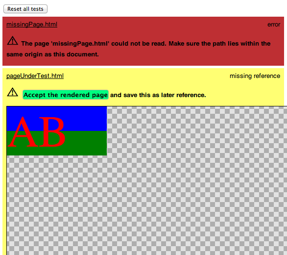

Automated testing and the tale of orangered.
It’s really easy to make changes to websites. Can be too easy.
One minor change → entire application.
JS, Java, etc: safeguard through test coverage. Even in the biggest web applications (like here.com), CSS is still mostly checked visually.
Possible to write a style go to production and not notice the unintended consequence. it overwrites a main style elsewhere.
More developers, more likely to happen. To illustrate this…
CSS: Declarative Language as opposed to an Imperative one. Developer says "You, do this thing here… I impel you".
Give controlled input, do the things I say, measure expected output.
Declaratative Dev says: “This is what I want out and I don’t really care how you make it happen”.
Traditionally testable areas covered by the internals of the browser.
That doesn’t mean it’s pointless. This presentation aims to highlight the techniques you can use to test CSS in an automated build pipeline and some of the tools currently available.
To bring out these areas, we’ll start with the simplest, smallest and most untestable configuration and work up to something similar to a typical deployment chain.
Great for the first 10 minutes or so. Your rollback policy is ctrl-z
The greatest thing about this set up is that it’s so easy. You make a change, hit save and, without any other interaction from you, the developer, it’s on production.
A bit better. Thank goodness everyone uses the same browser and you’re the only person in the team.
Now we start to expose some of the areas the site could fail on.
Now we’ve got a decent pipeline with plenty of different places and environments to check. Now it’s boring.
We have to verify our one change in a dozen different places and hope against unintended consequences. This is where we need our automated tests.
And this is where we need a change that we'll follow from editor to production.

All he does is change the color of some text. We want little orangered to make his way out into the world, all the way to Mount Production.
em {
color: #orangered;
}Most code editors will warn you about syntax errors before you even refresh the browser.
To integrate this into a build pipeline, your best option is probably the most well-known CSS testing tool: CSSLint as, aside from everything else it offers, it provides syntax checks. Importantly, it has great community support so there are already plugins for the most common continuous integration setups.
Demo!
div {
width:100px;
padding:0 10px;
}
The more consistency between different developers’ code, the fewer unintended consequences.
That is, of course, kind of like comparing two infinities, the chance of unintended consequences is still 100%, it’s just a slightly smaller 100%.
1: warning at line 3, col 2
Using width with padding can
sometimes make elements
larger than you expect.
Again, CSSLint really comes in handy here. If you were to enable Maximum Strictness and checked all the boxes, you'd be writing CSS exactly like Nicole Sullivan. You'd probably be Nicole Sullivan. Spend some time reading the rules and decide which rules you want to stick with and which you're easy about. Maybe, for your team, using width with padding can make elements exactly the size you expect.
These are per-project styles agreed upon and developed with the designer.
Maybe there are brand guidelines on colours or a particular element should always have a margin around it of a certain amount.
This sounds like deciding you want a three-bedroomed house
Starting to build a house then checking every 10 minutes how many bedrooms you have
Once you have three, stop building.
Define up-front what is required. As you build, test against what's expected. Once they're the same, you're done.
This can really only be done in-browser by measuring the actual styles applied to an element against those we predefined for it.
A cross between the W3C validator and CSS Lint by Philip Walton

Default rules validate HTML, custom rules test against whatever you specify.
Feature: Navigation
As a Web Designer
I would like to test my CSS
Scenario: CSS
Given I go to "/empty.html"
Then the "Main logo" should
have "margin" of "1.5em"
And the "Main logo" should
have "font family" of "Lobster"
(GhostStory) throws together as many buzzwords as possible.
Trying to think of a way to make it run in ‘The Cloud’.
Feature: Navigation
As a Web Designer
I would like to test my CSS
Scenario: CSS
Given I go to "/empty.html"
Then the "Main logo" should
have "margin" of "1.5em"
And the "Main logo" should
have "font family" of "Lobster"
Alongside your acceptance tests, you keep an object mapping your readable names to CSS selectors so the test can find what's being described.
selectors = {
"Main logo": ".logo img"
};On the command-line, you get nice, standard, build-pipeline-friendly output.
Demo!
GhostStory 2
GhostStory 2:
The Ghostening
Coming Summer 2013
Check for differences across browsers. Doesn't require individual test cases, just make the page.
This is the point where the developer creates the layout they want in their personal favourite browser of choice then checks to see how it matches up across all the target browsers.
The original becomes the reference case and any deviation from that is reported as an error. With an intelligent approach, a certain level of deviation could be allowed.
Mogotest is a commerical service using this technique (also known as Web Consistency Testing).
Kevin Menard's Google Tech Talk is highly recomended: youtu.be/_6fV-6eMSUM
They do a particularly nice job of reporting only the core mismatches between pages. If a div is 200px too low, its children would also report as 200px too low. By reporting the common parent’s errors, the useful information is maximised so you can focus on fixing just the core issues.
Our little change has been checked and rechecked.
By this point, we've got a couple of automated systems up so he can make it from our editor out to the development server without any interaction from us, as long as he passes all the tests.
Now that he's leaving the village, this is the first point he gets to meet other developers' changes…
Deploy Demo!
This is Thistle. She's another text colour change but she's !important.
If we didn't check at this point, we wouldn't know she'd taken precedence. The developer who made her is only checking that their change went through.
Poor orangered might be forgotten. That's where we need…
Tests that remember how things were and, after every change, get run to check how things are now.
There are a few different techniques available here and they each have their pros and cons.
When your page is done, take a screenshot of how it looks.
After changes, take another screenshot and compare the differences.
Visual: It’s doing what you'd do
Predictable: It's easy to automate
CSS is almost entirely visual. When you check manually, you check by looking. That's what these tools do.
Content-fragile: Copy changes break tests
A change in copy, a rotating banner, any slight change in content will be identified as a failed test.
DOM-unaware: Has no reference to the original page structure.
You know something’s wrong but don’t know where.
PhantomCSS by James Cryer
casper.start("http://csste.st/")
.then( function (){
css.screenshot('body');
})
.then( function (){
casper.page.sendEvent('click', 10, 10);
})
.then( function (){
css.screenshot('body');
})
CSSCritic by Christoph Burgmer
Make a copy
When your page is done, take a copy of the DOM and measure the styles applied. That becomes your test suite.
Run the test by using the same DOM and your new stylesheet. If the styles now are the same as they were, it's a pass.
==
Title
-
<!doctype html>
<html>
<head>
<meta charset="utf-8">
<base href="http://csste.st/">
<link rel="stylesheet" href="/css/styles.css">
</head>
<body>
<header>
<h1><a href="http://csste.st/">csste.st</a></h1>
</header>
</body>
</html>
-
html body header h1 a
-
{
"font-family":"georgia",
"font-weight":"normal",
"font-style":"italic",
"color":"rgb(9, 54, 66)",
"text-align":"center"
}
==Greatly simplified DOM structure containing the element we want to test and its parents along with a link to the stylesheet we want to test.
Selector to pass to the test suite, styles we expect
Uses PhantomJS.
Runs in browser or on command-line
Demo!
A lot of the testing techniques mentioned before can also count as regression tests. If something worked, it should continue to work.
Rather than comparing one browser against different browsers, compare the old page against the new one in the same browser.
Run your acceptance tests further down the pipe line. They should still pass.
Demo!
There isn’t a tool that will cover the entire process beginning to end. There isn’t a silver bullet technique that will ensure permanent consistency. Yet.
Hopefully, this has at least pointed out the small cracks in the pipeline into which we can try and squeeze our tests. The more people think about testing CSS, the better we’ll get at it. The best thing to do right now is try out all these tools, find problems in them, fix them.
The source for these slides and all the examples will be on GitHub and I'm hoping to turn csste.st into a community resource where we can create a useful directory of information on why and how to test your CSS.
A directory of information, links and guides on the why and how of CSS testing.
Article covering some tools in-depth.